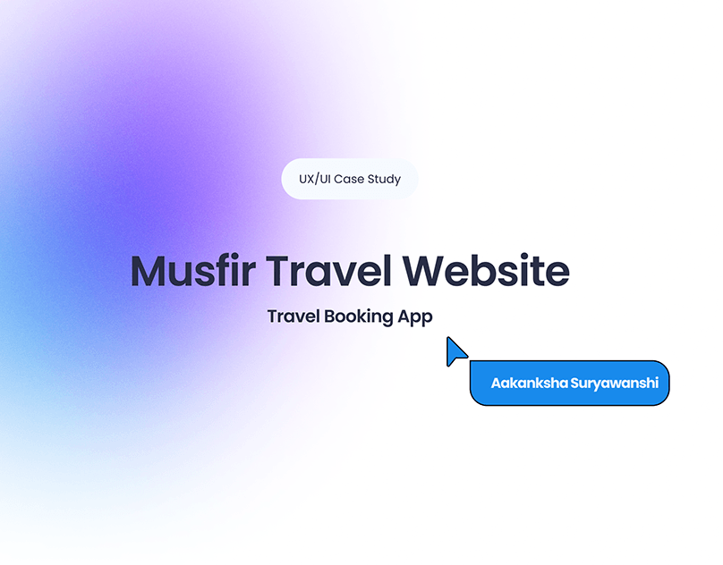
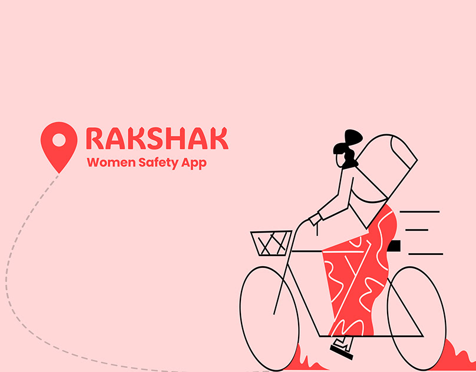
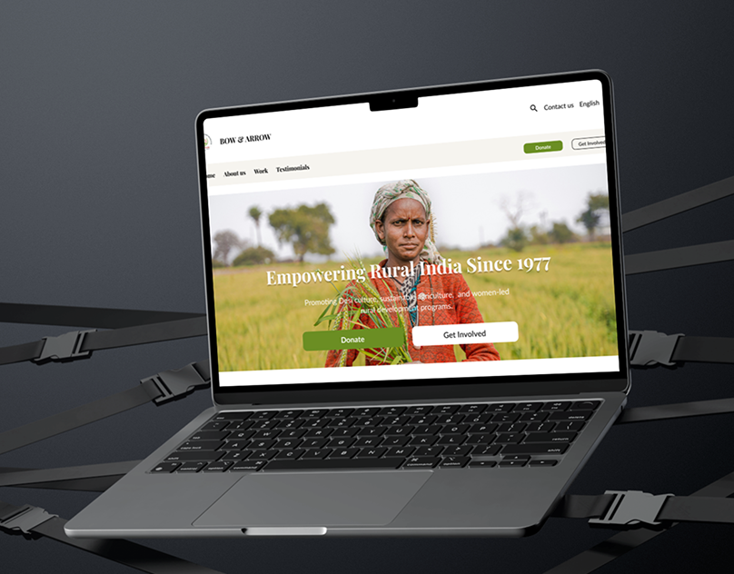

Graphic Designer
Designing Meta advertising creatives, social content and campaign visuals for Data & AI programs. Bringing together typography, visual hierarchy and brand consistency in Figma and Canva.
I research the problem, explore the possibilities, and design with people at the center.
Engineering background. Visual design roots. Thoughtful digital experiences.
Learn more about my journey:
In-depth design projects highlighting my process, problem-solving approach, and user-centered thinking.

Making the journey as intuitive as the destination.

A women’s safety experience for moments that matter.

Helping a meaningful mission find a clearer voice.

Bold creative for the next chapter of someone’s career.
Brand communication and digital experiences, made with intention.
Making the journey as intuitive as the destination.
A women’s safety experience for moments that matter.
Helping a meaningful mission find a clearer voice.
Bold creative for the next chapter of someone’s career.
Making the journey as intuitive as the destination.
A women’s safety experience for moments that matter.
Helping a meaningful mission find a clearer voice.
Bold creative for the next chapter of someone’s career.
A journey of learning and designing meaningful experiences.
Designing Meta advertising creatives, social content and campaign visuals for Data & AI programs. Bringing together typography, visual hierarchy and brand consistency in Figma and Canva.
Designed responsive travel web and mobile experiences, from wireframes and user flows to high-fidelity UI. Simplified navigation and booking flows, iterating on usability feedback with developers.
Researched and designed a women’s safety application with SOS alerts, live location and emergency contacts. Focused on accessible interfaces and clear interaction flows for high-stress situations.
An engineering foundation that informs how I approach structure, systems and problem-solving. Continuing to develop my craft through hands-on product design, research and prototyping.
Tools, methods, and skills built through real-world design work.
A mix of creativity, structure, and problem-solving shaped through hands-on design work.
The tools I use to turn ideas into real, usable experiences.
Drag the icons around—my toolkit is always evolving with new tools and skills.
Use arrow keys to move the focused tool. Press Home to reset its position.The principles behind how I research, design, and collaborate.
Understand the person behind the interaction. User needs, journeys and context shape the decisions I make.
Create intuitive flows and purposeful visual hierarchy. Every element should help someone find their next step.
Turn feedback into thoughtful refinements. Test assumptions, explore alternatives and keep learning throughout the process.
Understand the person behind the interaction. User needs, journeys and context shape the decisions I make.
Create intuitive flows and purposeful visual hierarchy. Every element should help someone find their next step.
Turn feedback into thoughtful refinements. Test assumptions, explore alternatives and keep learning throughout the process.
Reach out or check the FAQ—I’m here to connect and collaborate.
Let’s connect and build something meaningful.
A little more about me and how I approach design.
I follow a user-centered approach: research the problem, map user journeys, explore ideas, prototype, test and refine.
I’m exploring UI/UX and visual design roles where I can solve meaningful problems and grow with a collaborative team.
My work spans travel websites and booking apps, a women’s safety app, an NGO website redesign, and campaign creatives.
I treat feedback as part of the design process. I iterate with clear reasoning, while keeping user needs and project goals in focus.